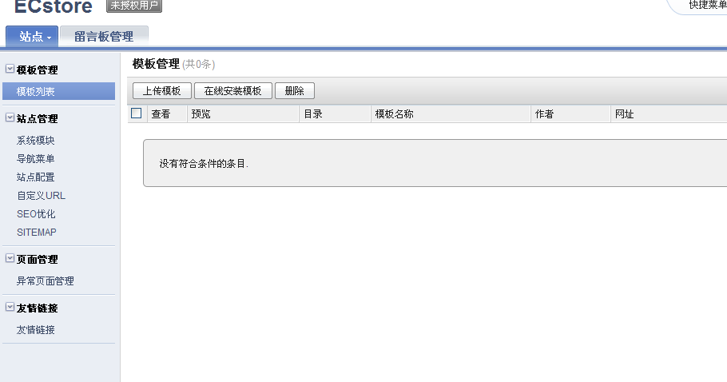
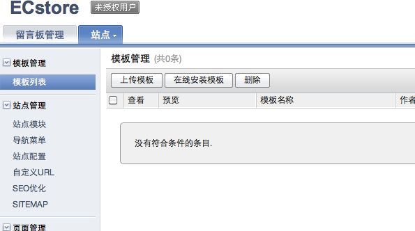
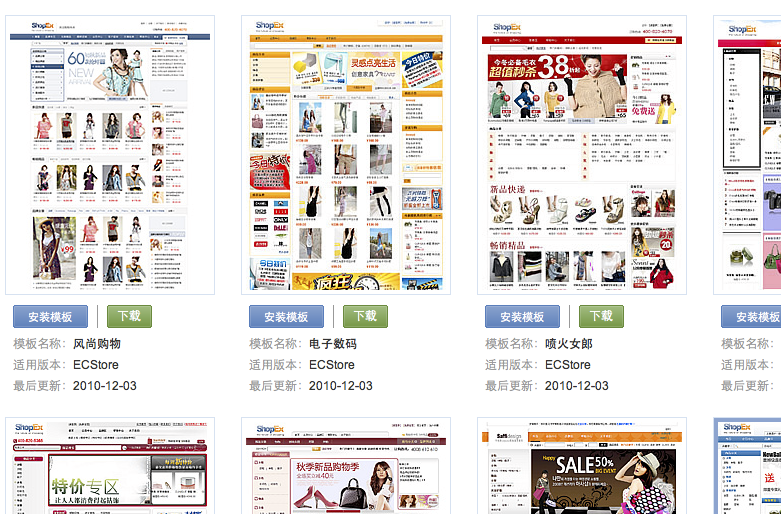
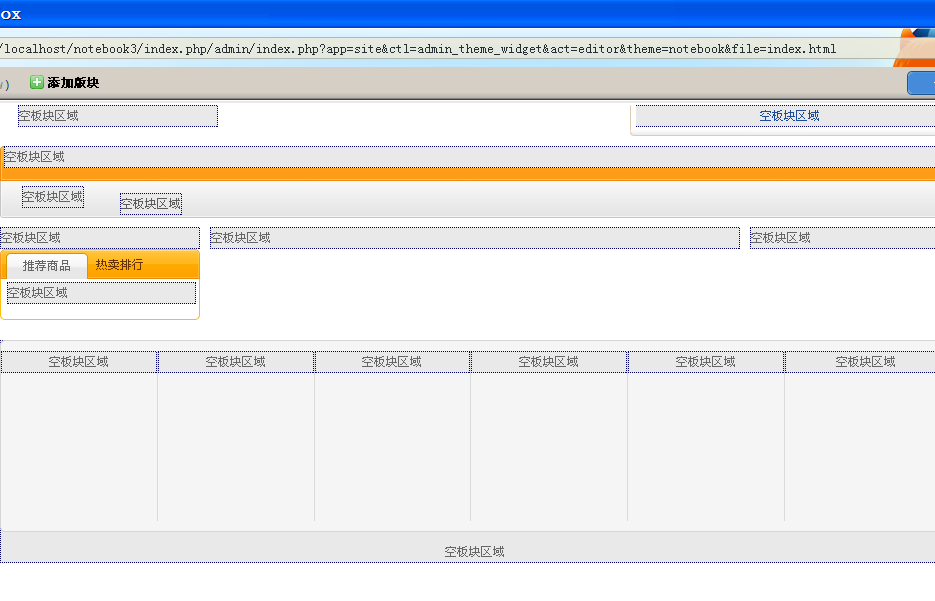
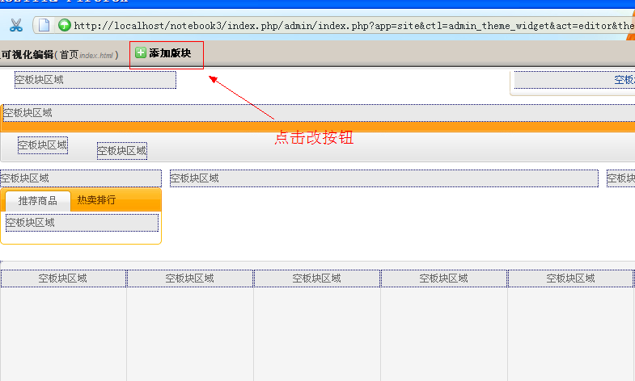
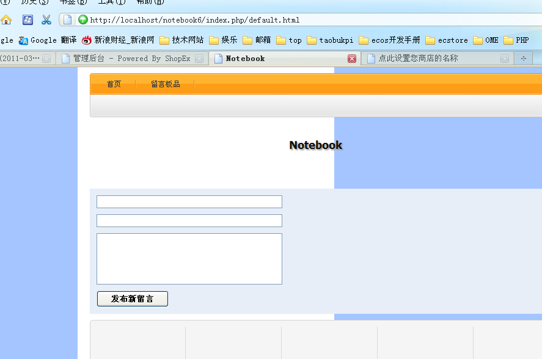
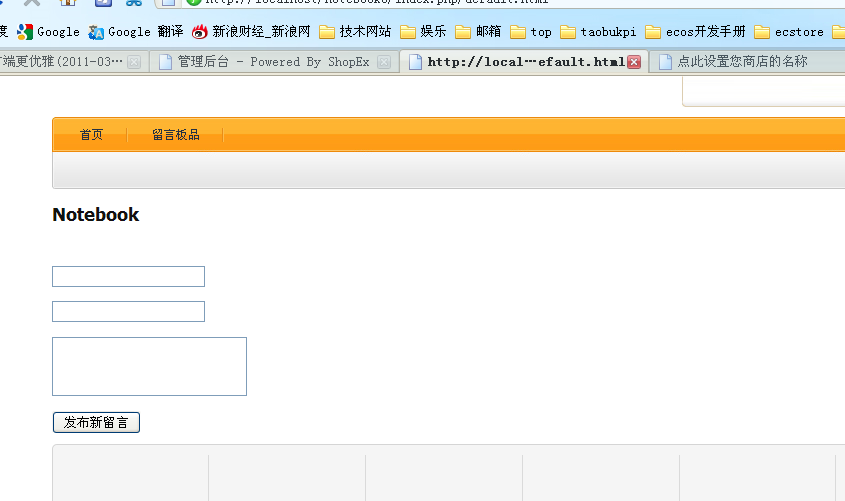
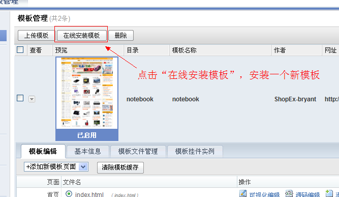

site: 比base提供的更强大的前端, 目前用做ecstore的前端展示提供模板机制, 站点管理, 菜单管理, sitemap, seo优化, sitemap, url路由, 提示信息, 友情链接等. 是自由建站的利器！
[http://app.ec-os.net/svn/site/trunk]
... <depends> ... <app>site</app> </depends> ...
bryant@forsky /Users/bryant/codes/notebook/app/base %> sudo ./cmd install -r notebook Creating table sdb_image_image Creating table sdb_image_image_attach Installing service desktop_finder.image_mdl_image image "en-us" language resource stored image "zh-cn" language resource stored Installing Cache_Expires DB:IMAGE_IMAGE UPDATE CACHE EXPIRES KV DATA Installing Cache_Expires DB:IMAGE_IMAGE_ATTACH UPDATE CACHE EXPIRES KV DATA Installing permission image Installing panelgroup images Installing adminpanel admin_manage:index Installing adminpanel admin_manage:imageset Initial image Application image installed... ok. Creating table sdb_site_explorers Creating table sdb_site_link Creating table sdb_site_menus Creating table sdb_site_modules Creating table sdb_site_route_statics Creating table sdb_site_seo Creating table sdb_site_themes Creating table sdb_site_themes_tmpl Creating table sdb_site_widgets Creating table sdb_site_widgets_instance Creating table sdb_site_widgets_proinstance Installing service desktop_finder.site_mdl_explorers Installing service desktop_finder.site_mdl_link Installing service desktop_finder.site_mdl_modules Installing service desktop_finder.site_mdl_seo Installing service desktop_finder.site_mdl_menus Installing service desktop_finder.site_mdl_themes Installing service desktop_finder.site_mdl_route_statics Installing service desktop_finder.site_mdl_route_statics Installing service desktop_finder.site_mdl_widgets_proinstance Installing service desktop_finder_callback.site_mdl_modules Installing service desktop_finder_callback.site_mdl_modules Installing service app_content_detector Installing service view_compile_helper Installing service view_helper Installing service site_view_helper Installing service site_controller_content Installing service cachemgr_global_vary Installing service site_service_seo Installing service autotask Installing service desktop_menu Installing service site_maps Installing service dev.project_type Installing service site_theme_content_detector Installing service tpl_source.site_proinstance Installing service site_display_errorpage.conf site "en-us" language resource stored site "zh-cn" language resource stored Installing Cache_Expires DB:SITE_EXPLORERS UPDATE CACHE EXPIRES KV DATA Installing Cache_Expires DB:SITE_LINK UPDATE CACHE EXPIRES KV DATA Installing Cache_Expires DB:SITE_MENUS UPDATE CACHE EXPIRES KV DATA Installing Cache_Expires DB:SITE_MODULES UPDATE CACHE EXPIRES KV DATA Installing Cache_Expires DB:SITE_ROUTE_STATICS UPDATE CACHE EXPIRES KV DATA Installing Cache_Expires DB:SITE_SEO UPDATE CACHE EXPIRES KV DATA Installing Cache_Expires DB:SITE_THEMES UPDATE CACHE EXPIRES KV DATA Installing Cache_Expires DB:SITE_THEMES_TMPL UPDATE CACHE EXPIRES KV DATA Installing Cache_Expires DB:SITE_WIDGETS UPDATE CACHE EXPIRES KV DATA Installing Cache_Expires DB:SITE_WIDGETS_INSTANCE UPDATE CACHE EXPIRES KV DATA Installing Cache_Expires DB:SITE_WIDGETS_PROINSTANCE UPDATE CACHE EXPIRES KV DATA Installing menu site_ctl_admin_module Installing menu site_ctl_admin_module Installing menu site_ctl_admin_module Installing menu site_ctl_admin_module Installing menu site_ctl_admin_module Installing menu site_ctl_admin_module Installing menu site_ctl_admin_module Installing menu site_ctl_admin_module Installing menu site_ctl_admin_module Installing menu site_ctl_admin_module Installing menu site_ctl_admin_module Installing menu site_ctl_admin_module Installing workground site.wrokground.theme Installing workground site.wrokground.theme Installing permission site Initial themes Application site installed... ok. Creating table sdb_notebook_item Installing service notebook_addon Installing service desktop_finder.notebook_mdl_item Installing Cache_Expires DB:NOTEBOOK_ITEM UPDATE CACHE EXPIRES KV DATA Installing menu notebook_ctl_admin_notebook Installing workground notebook_admin_notebook Installing permission notebook_manage Application notebook installed... ok.

下边开始准备为我们自己的模板提供在线安装
模板设计文档参见：[http://www.ec-os.net/quickstart/advance/site/template.html]


block borders default.html images index.html preview.jpg theme.xml
注：以上文件缺一不可，一定得复制完全！
<?xml version="1.0" encoding="UTF-8" ?>
<theme>
<name>notebook</name>
<id>notebook</id>
<version>0.1</version>
<info></info>
<author>ShopEx-bryant</author>
<site>http://www.shopex.cn</site>
<update_url></update_url>
<borders>
<set key="邮件订阅" tpl="borders/border1.html" />
<set key="边栏样式" tpl="borders/border2.html" />
<set key="品牌热卖排行" tpl="borders/border4.html" />
<set key="热销排行" tpl="borders/border5.html" />
<set key="首页商品列表" tpl="borders/border6.html" />
<set key="页尾文章列表" tpl="borders/border9.html" />
<set key="购买本商品的顾客还买过" tpl="borders/border10.html" />
</borders>
<views></views>
<config></config>
</theme>
因为我们复制的theme.xml这个文件里有很多无用的widget,所以我们还要做下面操作
bryant@forsky /Users/bryant/codes/notebook/app/base %> sudo ./cmd uninstall -r site ... ... bryant@forsky /Users/bryant/codes/notebook/app/base %> sudo ./cmd install notebook ... ...

修改前：
$setting['name']=app::get('b2c')->_('商店导航菜单');
修改后效果：$setting['name']='商店导航菜单';这种奇怪的写法是为了多语言的考虑, 暂无需理解。
bryant@forsky /Users/bryant/codes/notebook/app/base %> sudo ./cmd uninstall -r site ... ... bryant@forsky /Users/bryant/codes/notebook/app/base %> sudo ./cmd install notebook ... ...

下面，我们开始对之前的notebook前端进行改造：
<site>
<explorer id='notebook' path='view/site'>notebook</explorer>
<module controller='site_default' >
<name>default</name>
<title>notebook</title>
<disable>false</disable>
<allow_menu act='index'>留言板</allow_menu>
<default_menu>
<title>留言板</title>
<act>index</act>
<hidden>false</hidden>
</default_menu>
</module>
</site>
将
'/' 设置为 array('app' => 'site')
我们让site app来接管 通过url对控制器的调度方式
注：[http://localhost/项目名称/index.php/default.html] 对应到控制器为 **notebook_ctl_site_default**
这样的目的是为了seo友好
将function index 里的
$this->display('default.html');
替换为 $this->page('default.html');
将function addnew 的
$this->begin(array("ctl" => "default", "act" => "index", "app"=> "notebook"));
替换为 $this->begin(array("ctl" => "site_default", "act" => "index", "app"=> "notebook"));
将
...
<form id="writer" method="post" action="<{link ctl='default' act='addnew' app='notebook'}>">
...
修改为：...
<form id="writer" method="post" action="<{link ctl='site_default' act='addnew' app='notebook'}>">
...


